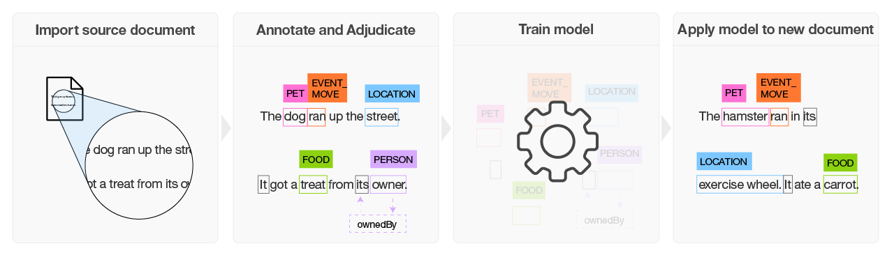
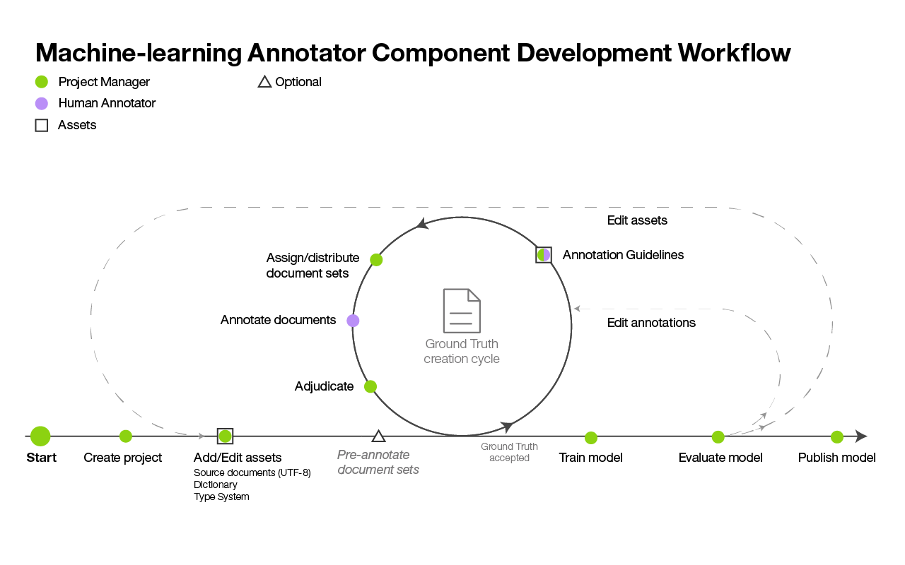

Watson Knowledge Studio
Posted on Tue 24 January 2017 in Learning
Think!!
IBM Watson™ Knowledge Studio to Create a machine-learning model that Understands the linguistic nuances, Meaning, and * Relationships Specific to your industry
Or
Create a rule-based model that finds entities in documents based on rules that you define.
To become a subject matter expert in a given industry or domain, Watson must be trained.
The task of training Watson can be facilitated by Watson Knowledge Studio.
Build a machine-learning model :
Watson Knowledge Studio provides easy-to-use tools for annotating unstructured domain literature, and uses those annotations to create a custom machine-learning model that understands the language of the domain.
The accuracy of the model improves through * iterative testing.
Ultimately resulting in an algorithm that can learn from the patterns that it sees and recognize those patterns in large collections of new documents.
The finished machine-learning model can be deployed to other solutions.

-
Based on a set of domain-specific source documents, the team creates a type system that defines entity types and relation types for the information of interest to the application that will use the model.
-
A group of 2 or more human annotators a small set of source documents to
-
label words that represent entity types,
- to identify relation types where the text identifies relationships between entity mentions.
-
to define coreferences, which identify different mentions that refer to the same thing, that is, the same entity.
-
The ground truth is used to train a model.
-
The trained model is used to find entities, relations, and coreferences in new, never-seen-before documents.
Creating a machine-learning annotator :
Create a machine-learning annotator that trains a model you can use to identify entities, coreferences, and relationships of interest in new documents.
Machine-learning model creation workflow:

Word Net
- New relations need to be identified. *